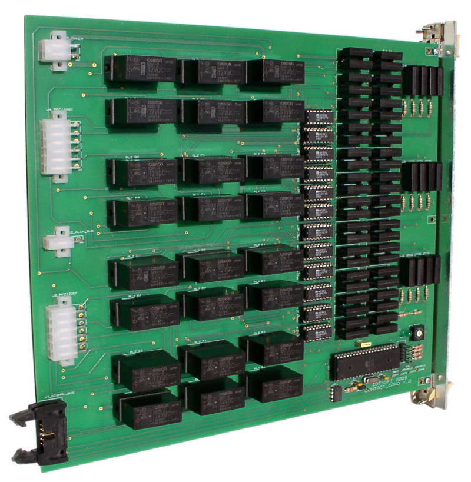
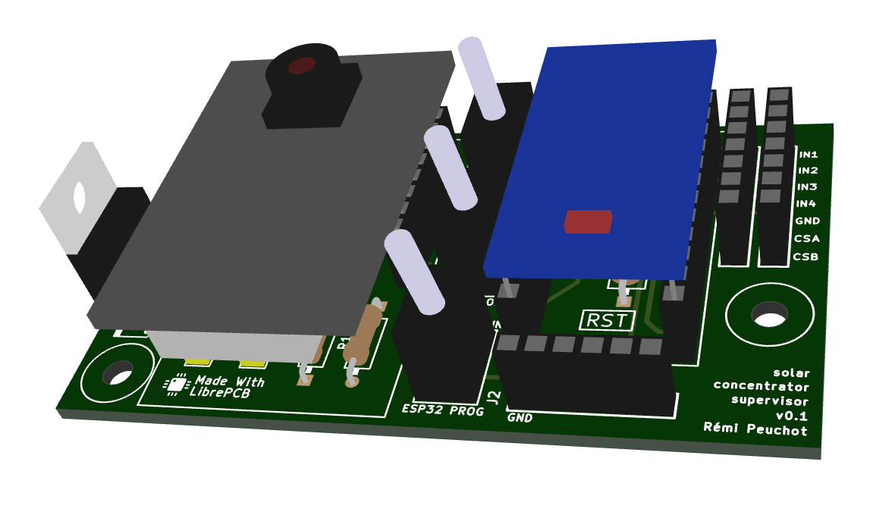
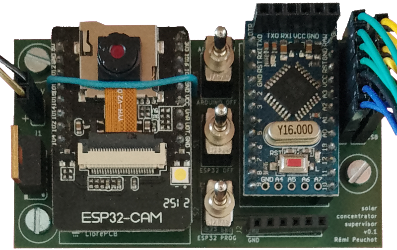

Rémi PEUCHOT

Je sais concevoir et réaliser des cartes électroniques sur mesure.
Proteus PCB Design Software
LibrePCB AISLER
Chez Idtsoft j’ai conçu des cartes spécifiques pour un projet permettant de tester automatiquement toute une gamme de relais pour la SNCF.
Le principe était de générer certains signaux spécifiques, de les aiguiller sur les bons contacts du relais à tester et de mesurer les réactions en retour :

J’ai aussi développé une carte d’interface pour mon concentrateur solaire.
 